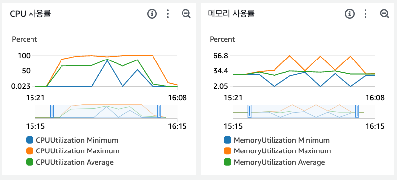
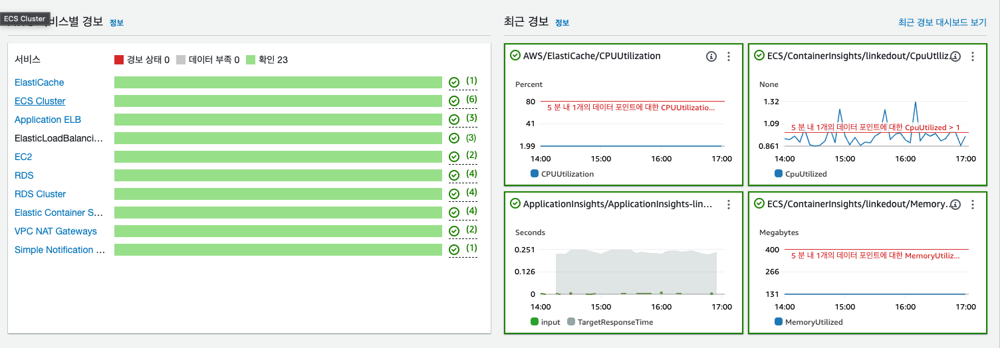

프로젝트 개요
소개
LinkedOut은 개인의 성장과 자기 이해를 돕는 에세이 작성 플랫폼입니다. 이 플랫폼은 사용자가 자신의 감정을 온전히 마주할 수 있도록 도와주는 글쓰기 가이드라인과 환경을 제공하고 누구나 자유롭고 쉽게 본인만의 에세이를 작성할 수 있습니다. 글쓰기를 통해 감정을 해소하고자 하는 사람들을 위해 설계된 이 서비스는, 단순히 글을 쓰는 것만이 아니라 솔직하고 깊은 감정을 글로 표현하는 것을 목표로 합니다.
현대인들은 살아가면서 수많은 감정을 느끼지만, 타인의 시선 때문에 자신의 감정을 정확하게 표현하는 데 어려움을 겪습니다. 현재 시중에 나와 있는 많은 '글쓰기' 앱들은 SNS적인 요소가 강해, 진솔한 글보다는 타인에게 잘 보이기 위한 꾸며낸 글이 대부분입니다. LinkedOut은 이러한 문제를 해결하기 위해 개인적인 감정과 감상을 솔직하게 표현할 수 있도록 익명성을 보장하고 좋아요, 조회수, 스크랩 수와 같은 상호작용을 제한함으로써 내면의 이야기를 막힘없이 쓸 수 있도록 유도하고자 했습니다.
목표
개인적인 목표
개발자로서의 성장을 멈추지 않고, 실제로 사람들이 사용하는 가치 있는 서비스를 만들고 싶었습니다. 이 프로젝트를 통해 팀을 구성하고 초기 기획을 세우며, 실무 경험과 비슷한 환경에서 협업과 개발 과정을 직접 경험하고자 했습니다. 궁극적으로는 개발자로서의 성취감을 얻고 실사용자를 가진 서비스를 만들어내는 것을 목표로 삼았습니다.
기술적인 목표
대용량 트래픽을 효과적으로 처리할 수 있는 백엔드 시스템을 설계하고, AWS 기반 오토스케일링 및 무중단 배포로 안정성과 확장성을 확보하며 리파지토리 패턴과 모듈화 설계 등을 통해 유지보수성과 재사용성을 향상시키는 것을 목표로 합니다.
기술스택
NestJS
라우트 중심의 자유로운 구조를 가진 Express와 다르게 명확한 레이어분리로 안정적인 구조를 유지할 수 있습니다. 특히 내장된 DI와 IoC를 통해 요청-응답 주기와 관계없이 싱글톤으로 유지하기 때문에 리소스를 효율적으로 관리하고 결합도를 낮춰 비즈니스 로직에 집중할 수 있습니다. 또한 데코레이터 기반 설계를 제공하여 가독성이 뛰어납니다.
PostgreSQL
모든 구성에서 ACID 규정을 준수해 트랜잭션의 원자성, 일관성, 고립성, 지속성을 보장해 데이터의 무결성 유지에 유리합니다. 또한 동시성 제어를 통해 여러 트랜잭션이 동시에 실행되어도 데이터 일관성을 유지하며 다양한 인덱스와 확장을 지원합니다. 특히 이번 프로젝트에서 중요한 검색기능과 위치기반 서비스 제공에 trgm 과 GIN 인덱스, PostGIS 등이 사용되었습니다.
TypeORM
TypeORM은 NestJS에서 공식적으로 지원하기 때문에 의존성 주입 및 데코레이터 기반 설계와 자연스럽게 결합되고 PostgreSQL과 원할한 연동이 가능하기 때문에 선택했습니다. 특히 PosgreSQL의 PostGIS 데이터 타입을 지원하기 때문에 활용면에서 편리했습니다.
AWS
타 클라우드 서비스에 비해 압도적으로 큰 생태계를 가지고 있기 때문에 많은 정보와 해결책을 찾을 수 있어 빠른 학습에 도움이된다 판단하여 선택했습니다. 이번 프로젝트에서는 ECS, ECR, RDS, ElastiCache, S3, CodePipeline, CloudFront, CloudWatch, Route 53 등의 서비스를 사용했습니다.
아키텍처 및 설계
인프라 아키텍처

고가용성과 수평 확장성
ECS를 사용해 AutoScaling 그룹으로 구성하여 트래픽 변화에 유동적으로 EC2인스턴스를 인/아웃 스케일링으로 대응하여 서비스의 가용성과 확장성을 확보합니다.
또한 Multi-AZ 배포를 통해 두 개의 가용 영역을 사용하므로 장애 발생 시에도 서비스가 중다되지 않도록 고가용성을 보장했습니다.
네트워크 설계
기본적으로 중요한 리소스들(서버, 데이터베이스 등)은 프라이빗 서브넷에 배치하여 외부에서 접근할 수 없지만 VPC 내에서 분리되어 있는 퍼블릭/프라이빗 서브넷을 NAT 게이트웨이로 연결하여 퍼블릭 서브넷의 로드 밸런서를 통해 트래픽을 전달/분산 하고 통신할 수 있도록 하였습니다.
인프라 관리 및 모니터링
애플리케이션을 컨테이너화하여 ECS로 관리하고 CI/CD 파이프라인을 구축해 완전자동 배포와 안정성을 높였습니다.
모니터링에는 AWS의 관리형 서비스를 적극 활용했습니다. RDS와 ElastiCache에서 제공하는 로그와 CloudWatch를 활용한 모니터링과 알림 설정으로 시스템의 상태를 실시간으로 파악하고 대응할 수 있도록 했습니다.
데이터 보호
최소 권한 원칙에 따라 IAM 역할과 보안 그룹을 설정하고 각 리소스에 대한 접근을 관리했스빈다. 백업 및 장애대응으로 RDS의 자동 백업 기능과 복구 전략, 예비 데이터베이스를 통해 데이터 손실에 대비하고 안정적인 데이터 관리를 목표로 했습니다.
트래픽 필터링
CloundFront를 사용하여 S# 퍼블릭 버킷과 배포된 웹 프론트엔드의 경로 명칭을 도메인과 통합해 일관된 URL 구조를 제공했습니다. 또 다른 이점으론 버킷에 대한 직접적인 접근을 제한하고 악의적인 트래픽과 공격으로부터 보호할 수 있는 WAF기능을 기본적으로 제공받을 수 있었습니다. 또한 엣지에 캐싱된 컨텐츠를 즉시 전송하므로 S3에 대한 트래픽을 줄이고 응답속도를 높일 수 있었습니다.
주요 설계 패턴
리파지토리 패턴

서비스 로직에서 데이터 접근 별도의 레이어로 분리해 추상화하여 결합도를 낮춰 서비스로직에만 집중할 수 있도록 했습니다. 이를 통해 테스트코드를 보다 편리하게 작성할 수 있으며 데이터 접근 코드가 모듈화되어 유지보수성과 재사용성을 높일 수 있었습니다.
CQRS 패턴
클라이언트 요청을 읽기(Query)와 쓰기(Command)로 분리하여 관림함으로써 유지보수성을 높입니다. 또한 컨트롤러와 서비스 레이어 사이에 핸들러 레이어를 추가하여 역할을 명확히 분리합니다. 핸들러는 특정 요청에 대한 고유한 로직을 담당하고 서비스 레이어는 여러 곳에서 공통으로 재사용 가능한 비즈니스 로직을 처리하도록 구성했습니다.
이를 통해 서비스 레이어의 책임을 줄이고 코드의 가독성이 향상되며, 핸들러와 독립적으로 동작할 수 있도록 설계하여 유연한 아키텍쳐를 구현했습니다.
ERD
데이터 모델은 User, Essay를 중심으로 다양한 기능 테이블을 유기적으로 연결해 설계했습니다. 먼저 사용자 계정 정보를 기본으로 각 사용자는 사용기기, 알림 설정, 구독, 뱃지와 같은 계정별 속성 테이블들과 연결되어 있습니다. 에세이 같은 주요 콘텐츠는에는 태그, 북마크, 스토리, 조회 기록 등이 연결되어 작성, 열람, 북마크, 태그 등 다양한 기능을 제공합니다.
운영 및 관리 관점에서는 리뷰, 신고, 공지, 문의 등 관련 테이블들과 함께 콘텐츠나 사용자 활동을 검수/관리할 수 있는 구조를 갖췄습니다. 이외에도 출시 버전, 서버 정보, 로그, 관리자 활동 이력 등 운영에 필요한 정보들을 별도 테이블로 분리했습니다.
주요 기능
추천 에세이

사용자가 최근에 조회한 글, 불마크 수, 트렌드 점수, 작성자의 평판 등 다양한 데이터를 활용해 최근 활동과 선호도 및 여러 가중치를 반영하여 보다 개인화된 추천을 제공합니다. 선택된 에세이의 내용 일부를 추출하여 미리보기를 제공하고 사용자가 에세이의 대략적인 내용을 파악할 수 있도록 했습니다.
하지만 에세이 테이블에 매우 커질 경우, 모든 에세이에 가중치를 적용해 비교하는건 리소스 효율에 좋지 못했고 레이턴시 또한 길어졌습니다. 따라서 가중치를 적용한 상위 n개의 에세이를 먼저 조회하고 그 중에서 에세이를 선택되도록 하여 최적화했습니다.
최근 활동 기반 태그 수집
사용자가 최근에 조회한 에세이들의 태그를 수집해 최근 태그 목록을 만들어 사용자의 현재 관심사를 반영하도록 했습니다. 예를 들어 사용자가 최근에 본 에세이들에서 '자기계발', '여행' 등의 태그가 있다면 이 태그들이 최근 태그 목록에 포함되고 추천에세이 가중치에 적용됩니다.
가중치 기반 에세이 조회
-
북마크: 해당 에세이에 북마크 수가 많을수록 많은 가중치를 받습니다.
-
태그: 사용자가 읽은 에세이의 최근 태그와 일치하는 태그를 가진 에세이에 가중치를 부여합니다.
-
트렌드: 에세이의 트렌드 점수는 작성일, 조회수 기반으로 부여되며 높은 트렌드 점수를 기반으로 가중치를 부여합니다.
-
작성자 평판: 에세이 작성자의 평판을 기준으로 가중치를 부여합니다.
에세이 필터링
추천 에세이에는 부적절한 콘텐츠로 신고되었거나 작성자가 공개를 원하지 않는 등 다양한 경우에 대응해 사용자에게 노출되지 않도록 필터링됩니다. 사용자 본인이 신고한 에세이의 경우 처분 결과와는 별개로 즉시 개인에게 노출을 제한하여 사용자의 불쾌감을 줄입니다.
평판 및 트렌드
사용자 활동과 에세이의 트렌드 점수를 관리해서 플랫폼의 실뢰성과 사용자 경험을 극대화하고자 했습니다. 평판과 트렌드 점수는 이 서비스의 핵심기능이라 할 수 잇는 추천 에세이 조회 쿼리에 사용되었습니다.
사용자 평판 관리
-
에세이 조회 시 작성자 평판 증가: 특정 조휘수에 도달할 때마다 작성자의 평판을 증가시켰습니다. 예를 들어 에세이 조회수가 100의 배수가 될 때마다 평판이 n점 증가합니다.
-
에세이 작성 시 작성자 평판 증가: 사용자가 주기적으로 에세이를 작성할 때 평판이 증가하도록 했습니다. 최근 일주일 내에 n편 이상 작성하거나, 최근 한 달 내에 n편 이상 작성한 경우 평판이 각각 n점씩 증가하도록 했습니다.
-
북마크 추가 시 작성자 평판 증가: 사용자가 에세이를 북마크하면 해당 에세이 작성자의 평판이 증가하고 에세이의 트렌드 점수도 같이 증가합니다.
에세이 트렌드 점수 관리
트렌드 점수 계산 로직은 에세이의 인기도를 반영하기 위해 조회 시 점수를 증가시키고, 작성된 날짜에 따라 점수가 감소하도록 설계했습니다. 이를 통해 에세이의 최신성과 인기도를 균형있게 유지할 수 있습니다.
설정한 감쇠 계수는 0.995로 작성 후 8일 동안은 감쇠를 적용하지 않도록하여 추천에세이가 조회될 때 최신글 가중치에 대한 최소한의 보장을 확립하고, 최소 0 이상으로 유지되도록 하여 버그를 방지했습니다.
ex) 작성 후 10일째 조회 발생시
7일동안은 감쇠를 적용하지 않기에, 그 이후로
3일이 감쇠 계수에 적용됩니다. 3일 동안의
감소율은 100 * 0.995^3 ≈ 98.5 가
됩니다.
이 때 만약 에세이의 트렌드 점수가 100이였다고
가정하면, 새로운 트렌드 점수는
98.5 + 1(조회증가량) = 99.5 -> 99(소수점
버림)
이 됩니다.
조회 이벤트 트리거를 이용한 점수 관리
트렌드 점수 관리는 초반에 크론작업을 통해 이루어졌지만 리소스효율성을 위해 조회 이벤트가 발생할때마다 트리거되도록 변경되었습니다.
크론 작업은 정해진 시간 간격마다 모든 에세이의 점수를 업데이트해야 하므로 서버 리소스를 많이 소모해야 했습니다. 반대로 조회 트리거 방식은 사용자가 실제로 에세이를 조회할 때만 점수를 비동기적으로 업데이트하므로 리소스를 보다 효율적으로 사용합니다.
에세이 검색

에세이 검색 기능은 사용자가 입력한 키워드를 기반으로 유사도 높은 에세이를 대용량 데이터에서 효율적이고 빠르게 검색할 수 있도록 PostgreSQL의 Trigram과 GIN 인덱스를 이용해 텍스트검색을 구현했습니다.
PosgreSQL에서는 텍스트를 저장할 때 Trigram + GIN 확장을 통해 내장함수를 사용하면 자동으로 문자열에서 3글자씩 잘라서 트라이그램을 생성하고 GIN 인덱스에 저장하게 됩니다.
-
Trigram 추출: 검색어를 3글자씩 잘라서 트라이그램을 생성합니다
-
GIN Index: 해당 트라이그램에 대한 위치(pos)를 통해 데이터베이스 인덱스와 매핑합니다.
-
검색 과정: 사용자가 "hell"을 검색한다고 가정하면, DB는 검색어에서 뽑힌 트라이그램 "hel", "ell" 을 GIN 인덱스와 비교합니다. 인덱스에 해당 트라이그램이 포함된 위치들을 빠르게 찾아서 최종적으로 "hello" 같은 실제 텍스트가 들어있는 레코드를 반환합니다.
Full Text Search
키워드 길이가 3자 미만인 경우 트라이그램이 충분히 생성되지 않아 유사도 분석이 부정확한 경우가 발생합니다. 이를 해결하기 위해 tsvector 타입으로 생성해둔 필드를 사용해 검색 정확도를 높혔습니다.
tsvector 는 텍스트를 토큰화하고 인덱싱하는데, 텍스트의 각 단어를 분리하고 각 단어의 위치와 중요도를 저장합니다. 예시로 "안녕하세요. 저는 개발자입니다." 는 다음과 같은 tsvector로 변환되게 됩니다.
'안녕하세요':1A '저는':2B '개발자':3C
'입니다':4D
이 후 tsquery를 사용해 검색어를 토큰화하고 미리 생성해둔 vector 필드와 비교해 일치하는 결과를 찾게됩니다.
성능 최적화 및 확장성
동시성 제어 및 성능 최적화
발생했던 이슈
추천 에세이 기능의 가중치로 사용되는 데이터인 조회수, 평판, 트렌드 점수 등 타겟 에세이를 조회시 실시간 업데이트 방식으로 구현했었습니다.
이러한 실시간 업데이트 방식은 소규모 트래픽에서는 문제가 없었지만, 대규모 트래픽이 발생하는 상황에서는 트랜잭션이 충돌하거나 조회요청이 발생할 때마다 즉시 데이터베이스를 업데이트해야하므로 부하를 증가시키고 성능 저하를 유발할 가능성이 있었습니다.
물론 PosgreSQL의 기본 동시성제어가 있지만 트랜잭션이 경쟁상태에 빠질 수 있고, 예기치못한 에러로 요청에 대한 정상적인 작업이 이루어지지 않을 경우 사용자 경험의 질을 떨어트릴 수 있다고 생각했습니다.

해결 방안
-
집계 테이블 사용
각 데이터를 실시간으로 메인 테이블에 반영하지 않고 우선 집계 테이블에 저장되도록 변경했습니다. 이를 통해 실시간 업데이트로 인한 메인테이블의 부하를 일차적으로 방지합니다.
-
비동기 처리 및 분산 락 적용
집계 데이터들은 실시간 업데이트가 불필요하므로 비동기 작업으로 전환하고 Redis를 활용한 분산락을 도입했습니다. 데이터베이스 기반의 비관적 락은 동일한 레코드에 대한 여러 트랜잭션이 생성되면 '락'을 획득한 트랜잭션을 제외한 나머지 트랜잭션은 커넥션을 유지하며 대기하게 되며 이는 곧 커넥션 풀 부족 현상이 생겨 지연 현상이 발생할 수 있었습니다. 반면 Redis를 이용한 분산 락을 활용하는 경우 '락'을 획득하기 전에는 커넥션을 생성하지 않고 대기하도록 구현할 수 있기 때문에 커넥션 풀 관리에 보다 유리했고, 여러 개의 서버에서 동일한 레코드에 대한 락을 통일적으로 관리할 수 있었습니다.
-
스케쥴러 기반 업데이트
그렇게 집계된 데이터들은 일정 간격으로 실행되는 스케쥴러를 통해 메인 테이블로 일괄 업데이트 되게 구현했습니다. 이러한 방식은 추천에세이 조회시 가중치에 대한 더티리드를 발생시키지만 사용자에게 직접적으로 노출되지 않으므로 데이터의 일관성보다 성능을 우선시하여 설계했습니다.
큐 시스템
부족한 서버 리소스에서 다양한 서비스들 중 많은 데이터를 한거번에 처리하는 작업은 자칫 성능에 영향을 줄 수 있었습니다. 특히 대규모 데이터베이스 업데이트나 많은 연산을 필요로 하는 작업은 서버 다운이나 타임아웃이 발생할 수 있었습니다.
이러한 문제를 해결하기 위해 작업을 배치로 나누어 큐를 통해 점진적으로 처리하는 방법을 모색했습니다. 큐 기반 작업을 통해 즉각적인 응답이 불필요하고 많은 리소스를 사용하는 작업을 효율적으로 배치해 나누어 처리하고, 작업 실패 시 재시도 및 백오프 전략을 통해 안정성을 유지해 다양한 요구사항에 유연하게 대응할 수 있습니다.
예시: 회원 탈퇴 희망자 유저 처리
회원 탈퇴 요청 시 30일간의 유예기간을 두고, 이
기간 동안 탈퇴 희망을 철회하지 않으면 스케쥴
작업을 통해 해당 유저들의 데이터를 논리삭제
해야했습니다. 이를 효과적으로 처리하기 위해
NestJS의
Bull 라이브러리를 사용하여 큐 기반
작업을 구현했습니다. 해당 라이브러리는
기본적으로 FIFO 방식으로 동작하여 작업이 추가된
순서대로 처리되므로 작업의 순서와 일관성을
유지합니다.
트래픽이 가장 적을 것으로 예상되는 새벽시간에 스케쥴 작업을 실행하고, 추가적으로 bull 큐는 등록된 작업을 여러 워커 노드에서 병렬로 처리하기 때문에 시스템 부하를 줄이기 위한 목적에 맞게 워커 노드를 하나로 제한해 각 작업이 순차적으로 실행되도록 설정했습니다.
부하 테스트
수평적 확장 테스트
ECS 기반의 컨테이너 오케스트레이션이 트래픽 증가에 다라 자동으로 수평적 확장을 잘 수행하는지 검증하기 위해 테스트를 진행했습니다. ECS는 서비스에 사용중인 CPU 평균 사용률이 지정한 선을 동안 유지되면 자동으로 새로운 인스턴스를 추가하고 실행중인 태스크를 적용해야 합니다. 초과하는 상태로 특정 시간도
ec2: t2.micro
-
VUs(가상유저): 초기 200에서 점진적으로 최대 800까지 증가시킵니다.
요청 주기: 1초
-
요청 API: 에세이 검색(검색어를 데이터베이스에서 조회)
테스트 설정
-
VUs가 200일 때 CPU 사용률(통합)이 거의 최대치에 도달하게 됩니다. (t2.micro 인스턴스 리소스 최대 사용)
-
VUs를 점진적으로 증가시켜 스트레스를 높이고 인스턴스 추가를 유도하고 관찰했습니다.
테스트 과정

/\ |‾‾| /‾‾/ /‾‾/
/\ / \ | |/ / / /
/ \/ \ | ( / ‾‾\
/ \ | |\ \ | (‾) |
/ __________ \ |__| \__\ \_____/ .io
execution: local
script: ./src/config/scripts/k6.ts
output: -
scenarios: (100.00%) 1 scenario, 800 max VUs, 29m30s max duration (incl. graceful stop):
* default: Up to 800 looping VUs for 29m0s over 6 stages (gracefulRampDown: 30s, gracefulStop: 30s)
data_received..................: 466 MB 267 kB/s
data_sent......................: 45 MB 26 kB/s
http_req_blocked...............: avg=30.61µs min=0s med=0s max=84.2ms p(90)=1µs p(95)=1µs
http_req_connecting............: avg=10.78µs min=0s med=0s max=18.4ms p(90)=0s p(95)=0s
http_req_duration..............: avg=604.75ms min=4.69ms med=525.21ms max=11.76s p(90)=1.32s p(95)=1.42s
{ expected_response:true }...: avg=604.88ms min=7.67ms med=525.42ms max=11.76s p(90)=1.32s p(95)=1.42s
http_req_failed................: 0.02% ✓ 105 ✗ 453866
http_req_receiving.............: avg=83.85µs min=5µs med=29µs max=213.4ms p(90)=115µs p(95)=208µs
http_req_sending...............: avg=176.63µs min=12µs med=64µs max=42.14ms p(90)=294µs p(95)=618µs
http_req_tls_handshaking.......: avg=18.76µs min=0s med=0s max=74.35ms p(90)=0s p(95)=0s
http_req_waiting...............: avg=604.49ms min=0s med=524.85ms max=11.76s p(90)=1.32s p(95)=1.42s
http_reqs......................: 453971 260.756483/s
iteration_duration.............: avg=1.6s min=1s med=1.52s max=12.76s p(90)=2.32s p(95)=2.43s
iterations.....................: 453971 260.756483/s
vus............................: 13 min=7 max=799
vus_max........................: 800 min=800 max=800
running (29m01.0s), 000/800 VUs, 453971 complete and 0 interrupted iterations
default ✓ [======================================] 000/800 VUs 29m0sAWS CloudWatch의 CPU 사용률 그래프와 부하 테스트 결과를 통해 ECS가 예상대로 동작하여 인스턴스를 추가하고, 수평적 확장을 통해 부하를 효과적으로 처리하는것을 확인했습니다. 평균 응답 시간 및 실패율 분석을 통해 시스템이 고부화 상황에서도 안정적으로 운영된다는 것을 확인할 수 있었습니다.
-
CPU 및 메모리 사용률
VUs가 200일 때 CPU 사용률은 거의 최대치를 기록합니다. 테스트에서 7분 간격으로 VUs를 200씩 증가시키므로 수평적 확장이 이루어지지 않았다면 서버가 다운되거나 장애가 발생하게 됩니다. 그래프로 확인 시 VUs가 점진적으로 증가함과 동시에 아웃스케일링이 실행되고, 새로운 자원을 증가된 요청을 처리하는데 최대치로 사용하는걸 확인할 수 있습니다. 추가적으로 새로운 인스턴스를 배포하며서 발생한 메모리 그래프의 변동사항을 확인하여 아웃스케일링이 언제 발생하였는지 시각적으로도 확인할 수 있습니다.
-
http_req_duration
평균 레이턴시는 약 604.75ms로 최대 11.76s에 도달한 요청도 있지만, 이는 t2.micro인스턴스가 감당할 수 있는 한계치까지 스트레스를 발생시켰기에 일시적인 응답지연이 발생한것으로 예상됩니다. 대부분의 요청은 평균 응답 시간 내에서 처리된것을 확인할 수 있습니다.
-
http_reqs
총 453971건의 요청이 처리되었으며 실패율은 0.02%로 성공률이 매우 높았기에, 본 수평적 확장 테스트를 성공적으로 마무리했습니다.
운영 시스템
역할기반 접근제어

각 역할(일반 유저, 관리자, 루트 관리자)에 대한 별도의 테이블과 전략 패턴을 사용하여 인증과 인가를 처리했습니다.
일반 유저는 제공하는 서비스에만 접근할 수 있도록 제한해 개발자가 의도한 기능만 사용할 수 있으며 민감한 정보에는 접근할 수 없도록 했습니다. 관리자는 공지 작성, 신고 및 리뷰 처리 등 다양한 데이터를 조회하고 판단하여 원할한 서비스 운영을 할 수 있도록 하였습니다. 추가로 루트관리자의 경우 일바 관리자와 분리하여 관리자의 활동 로그 조회, 직접적인 데이터베이스 객체 조작 등 서비스의 투명성과 관리자 역할로 수행하기 위험한 기능을 사용할 수 있도록 하였습니다.
서버 상태 관리
서버 상태 관리 기능은 운연 중 발생할 수 있는 다양한 변수에 신속하게 대응하기 위해 도입했습니다. 서버는 다음과 같은 상태를 가질 수 있도록 설계했습니다.
-
활성: 서버가 정상적으로 운영되며, 모든 요청을 처리할 수 있는 상태입니다. 이 상태에서는 사용자가 정상적으로 서비스를 이용할 수 있으며 각 요청에 맞는 상태코드와 데이터를 받게 됩니다.
-
유지보수: 서버가 시스템 유지보수 작업을 위해 일시적으로 접근을 제한하는 상태입니다. 이때는 관리자만 시스템에 접근할 수 있으며, 일반 사용자의 요청에는 423(Locked) 상태 코드가 반환됩니다.
-
닫힘: 서버가 일시적으로 닫혀 외부 요청을 처리하지 않는 상태입니다. 이 상태에서는 루트 관리자만 시스템에 접근할 수 있으며, 일반 사용자의 요청에는 503 (Service Unavailable) 상태 코드가 반환됩니다.
현재 서버는 AWS 인프라를 기반으로 배포되어 운영되고 있고 이 환경은 다양한 서비스와 인프라가 복잡하게 얽혀 있기 때문에 이를 수동으로 제한하거나 개방하는 작업은 매우 번거롭고 시간이 소요될 수 있습니다. 또한 긴급한 상황에서 서버 상태를 변경하기 위해 인프라를 직접적으로 조정하려다 실수를 범할 가능성이 있고 이로 인해 돌이킬 수 없는 이슈가 발생할 수 있습니다. 그렇기에 서버 상태 관리 기능을 추가함으로써 관리자는 단순한 조작으로 서버의 상태를 변경해 대응할 수 있습니다.
-
긴급 상황 대응
운영 중 치명적인 버그가 발견되었을 때 시스템의 무결성을 유지하기 위해 서버를 신속하게 유지보수 상태로 전환하여 일반 사용자 접근을 차단해 문제를 진단하고 수정할 시간을 확보할 수 있습니다. 또한 악의적인 DDoS 공격이나 기타 보안 위협을 받고 있을 때 서버를 보호하고 추가적인 피해를 방지할 수 있습니다.
-
계획 유지보수
무중단 배포가 불가능한 업그레이드, 패치 적용 등이나 중요한 데이터 마이그레이션 작업이 있을 때 사전에 서버를 유지보수 상태로 전환하여 사용자에게 영향을 주지 않고 안전하게 작업을 진행할 수 있습니다. 이 과정에서 관리자만 시스템에 접근할 수 있게 되어 운영의 안정성을 보장합니다.
-
서버 상태 가시성
관리자가 현재 서버의 상태를 명확하게 파악하고 필요에 따라 신속하게 상태를 변경할 수 있도록 함으로써 전체 시스템의 가용성과 보안을 유지할 수 있습니다. 이 기능은 서버 운영에 있어 예기치 않은 상황에 대비하는 유연성을 제공하게 됩니다.
신고 및 제재 관리
이용자들은 다른 생성자가 생성한 콘텐츠에 대해 신고할 수 있고, 관리자는 이를 검토하고 운영 정책에 위반된 경우 제재를 가할 수 있도록 설계했습니다. 이 기능은 서비스 내에서 발생할 수 있는 문제를 효과적으로 관리하고 커뮤니티의 건전성을 유지하는데 중요한 역할을 합니다.
일정량 이상의 신고가 운영정책에 위반되었음이 확인되면, 서버는 자동으로 해당 유저를 모니터링 유저로 지정합니다. 이후 작성되는 콘텐츠는 관리자의 사전 검토를 받아야 퍼블릭(발행)될 수 있습니다. 이를 통해 잠재적인 문제를 사전에 방지하고 서비스 품질을 유지합니다.
지속적으로 불건전 콘텐츠를 생성하거나 악의적으로 심각한 오류를 발생시킨 경우 관리자는 해당 유저를 밴 유저로 지정할 수 있습니다. 밴 유저로 지정된 사용자는 서비스에 접근이 차단됩니다.
기본적으로 콘텐츠와 신고는 1:M 관계가 경 형성됩니다. 그렇기 때문에 동일한 콘텐츠에 대한 신고를 개별로 처리할 경우 각 신고의 처리 결과가 불일치하거나 여러 관리자가 신고를 처리하는 겨 우 혼란을 야기할 수 있습니다. 이를 해결하기 위해 각 신고를 개별로 처리하는 대신 동일한 콘텐츠에 대한 모든 신고를 그룹으로 일괄적으로 처리할 수 있도록 설계했습니다.
보안
입력검증
DTO를 통한 검증 및 직렬화
요청 데이터가 서비스 로직에 도달하기 전에 DTO를 사용해 필드의 타입, 필수 여부, 패턴 등을 검증 및 변경하여 예상치 못한 입력이 서버에 영향을 주지 않도록 했습니다. 또한 데이터베이스에서 조회된 데이터를 직렬화해 필요한 필드만 응답에 포함시키고 민감한 정보나 내부 구현 세부사항이 노출되지 않도록 직렬화해 보안을 강화하고 응답구조를 일괄되게 유지해 클라이언트로 반환합니다.
ORM을 통한 인젝션 방지
async findUserByEmail(email: string) {
// Repository를 사용하여 'user' 테이블에서 특정 이메일을 가진 사용자를 찾는 쿼리 빌더를 생성
return this.userRepository
.createQueryBuilder('user') // 'user' 테이블에 대한 별칭을 설정
.where('user.email = :email', { email }) // WHERE 절에서 명명된 매개변수 ':email'을 사용하여 쿼리 조건을 설정
/*
':email'은 SQL 쿼리 문자열 내에서 사용되는 매개변수 자리표시자입니다.
TypeORM은 이 자리표시자에 'email' 변수의 값을 안전하게 바인딩합니다.
여기서 중요한 점은, 사용자가 입력한 'email' 값이 직접 쿼리 문자열에 삽입되지 않는다는 것입니다.
대신, 'email' 값은 나중에 TypeORM에 의해 쿼리 실행 시점에 안전하게 바인딩되며,
이로 인해 SQL 인젝션 공격이 방지됩니다.
예를 들어, 사용자가 "john@example.com; DROP TABLE users;" 같은 악의적인 값을 입력하더라도
이 값은 단순한 문자열로 처리되어 쿼리의 의도치 않은 실행을 막을 수 있습니다.
*/
.getOne(); // 쿼리를 실행하고 결과를 반환
}사용자가 입력한 값을 쿼리에 특정 위치에 삽입하기 전에 별도의 파라미터로 처리해 바인딩하여 쿼리문에 직접 삽입되지 않도록 했습니다. 이로 인해 공격자가 SQL 명렁어가 포함된 코드를 삽입하더라도 그 값은 단순한 데이터로 처리되어 쿼리문 자체의 구조가 깨지지 않아 SQL 인젝션이 발생하지 않게 됩니다.
인증 및 토큰 관리
NestJS의 `Guard` 데코레이터를 이용해 인증/인가 로직을 구현했습니다. 이 가드는 HTTP 요청을 처리하기 전에 JWT의 유효성을 검사하고, 만료된 토큰을 처리하며 리프레쉬 토큰을 이용한 새로운 액세스 토큰 발급 과정에서 보안 강화를 위해 여러 가지 검사를 수행합니다. 특히, 비정상적인 접근 시도나 토큰 탈취 가능성에 대해 대응하기 위한 로직이 포함되어 있습니다.
토큰 갱신 자동화
보통의 경우 엑세스 토큰(이하 AT)이 만료되면 클라이언트는 이 만료된 토큰을 감지하고 리프레쉬 토큰(이하 RT)를 이용해 새로운 AT를 요청하는 절차를 따릅니다. 이는 프론트엔드에서 AT가 만료됨을 감지하고 RT를 사용해 AT를 재발급받아야하는 불편함이 있습니다.
팀원들이 인가 절차에 신경을 쓰기 보다는, 본인의 업무에 더 집중할 수 있도록 하기 위해 이 과정을 백엔드에서 자동화하고자 했습니다. 즉, AT가 만료된 경우에도 백엔드에서 자동으로 요청 헤더에 포함된 RT를 사용해 AT를 갱신하도록 하여 프론트에선 갱신된 AT만 감지하면 되도록 설계했습니다.
이 접근 방식은 프론트엔드 개발자에게 편의성을 제공하며 전체적인 생산성을 높일 수 있었다고 생각합니다. 하지만 이 과정에서 몇가지 이슈가 발생할 수 있었습니다.
동시성 이슈
한 명의 사용자의 만료된 AT를 가진 다수의 요청이 동시에 발생할 때 각 요청이 RT를 사용해 새로운 AT를 발급받으려고 시도할 수 있습니다. 이런 경우 종복된 갱신 요청이 발생해 리소스가 낭비될 뿐만 아니라 의도하지 않은 동작을 유발할 수 있고 토큰이 무한히 복제되기 때문에 보안에도 문제가 발생할 수 있었습니다.
이를 해결하기 위해 Redis를 사용해 특정 요청이 RT를 이용해 AT를 갱신중임을 캐싱하고, 이 키가 설정된 동안에는 중복된 갱신 요청을 잠시 대기시켜 갱신 작업이 완료된 후 캐싱된 새로운 AT를 사용하도록 처리했습니다.
중복 갱신 이슈는 해결되었지만 여기서 또 다른 문제가 발생했습니다. 중복 갱신을 막기 위한 로직으로 인해 또 다른 요청이 RT를 사용하려 할 때 RT재사용을 막기 위한 로직으로 인해 후속 요청들은 오류를 반환하게 되었고, 이는 사용자 경험에 부정적인 영향을 미쳤습니다.
이를 해결하기 위해 갱신된 새로운 AT를 n초(동시성 요청들에 대한 작업이 완료되기까지 충분한 시간)동안 캐싱하여, 이 시간 동안 들어오는 후속 요청들의 만료된 AT를 감지되면 캐싱된 갱신 토큰을 사용해 요청을 정상처리할 수 있도록 하여 모든 요청이 동일한 갱신된 토큰을 사용할 수 있도록 했습니다.
토큰 버전 관리
초기에는 비정상적인 접근이 가지되었을 때 Redis에 해당 RT를 블랙리스트 처리하는 방식을 사용했습니다. 하지만 이 방식은 메모리 캐시 사용량을 점진적으로 증가시키는 문제가 있었습니다.
메모리나 데이터베이스에 저장하는 방식 대신 사용자와 발급하는 토큰에 버전을 부여해 비정상적인 접근이 감지되거나 RT를 발급(로그인)받은 환경과 다른경우 토큰 사용자의 토큰 버전을 증가시킴으로 RT를 무효화 처리해 재로그인을 유도했습니다.
이 방식은 추가적인 메모리 사용 없이도 부적절한 요청에 RT를 무효화하고 보안 측면에서 보다 좋은 효율성을 유지할 수 있었습니다.
시퀀스와 구현 로직
-
1. 퍼블릭 엔드포인트 확인
요청 엔드포인트가 공개 상태인지 확인합니다. 이는 인가가 불필요한 경로에 커스텀 데코레이터로 메타데이터를 조작하고, 해당 데코레이터가 적용된 경로는 요청을 통과시킵니다. 이를 위해 Reflector를 사용하여 엔드포인트에 설정된 메타데이터를 확인합니다.
-
2. Authorization 헤더 확인
요청에 Authorization 헤더가 포함되어 있는지 확인합니다. 헤더가 없다면 인증(로그인)이 필요함을 응답합니다.
-
3. JWT 검증
헤더에서 JWT를 추출해 토큰의 유효성을 검증합니다. 만약 토큰이 만료되었거나 유효하지 않은 경우, TokenExpiredError 또는 기타 오류가 발생하게 됩니다.
-
4. 만료된 토큰 처리
토큰이 만료된 경우 다음 로직을 거치게 됩니다.
-
리프레쉬 토큰 검증: 요청 헤더에서 x-refresh-token(커스텀 필드)을 추출하여 리프레쉬 토큰의 유효성을 검증합니다.
-
동시성 이슈 해결: 최근 n초 이내에 동일한 리프레쉬 토큰을 사용해 갱신된 엑세스 토큰이 있는지 확인합니다. 있다면 해당 토큰을 이용해 요청을 정상처리합니다. 이는 만료된 AT를 이용한 비동기 호출 동시성 문제를 해결합니다.
-
토큰 버전 관리: 리프레쉬 토큰의 버전이 사용자 데이터와 일치하는지 확인합니다. 일치하지 않는다면 비정상적인 접근으로 간주하고 인가를 거부합니다.
-
디바이스 검증: 현재 요청된 디바이스 정보가 리프레쉬 토큰을 발급받은 디바이스와 일치하는지 확인합니다. 일치하지 않는 경우 토큰 버전을 증가시키고 사용자 관련 캐시 데이터를 삭제하여 해당 리프레쉬 토큰을 무효화합니다.
-
캐시된 RT 확인: AT의 유효기간은 30분으로, RT는 30분 이내에 한 번만 사용됩니다. 리프레쉬 토큰 사용 시간을 캐싱하여 30분 이내에 재사용이 되는 경우, 토큰 버전을 증가시키고 캐시된 데이터를 삭제해 토큰 탈취나 남용을 방지합니다.
-
AT 갱신: RT가 유효하고, 모든 검사를 통과한 경우 새로운 AT를 응답 헤더에 추가하고 요청을 정상처리합니다.
-
DevOps 및 배포
CI/CD
프로젝트를 시작할 때 가장 먼저 CI/CD 파이프라인을 구축했습니다. 이를 통해 코드 변경 시 자동화된 빌드, 테스트, 배포 과정을 통해 환경 간의 일관성을 유지하고 빠른 오류 감지와 수정으로 생산성을 향상시켰습니다. 또한 점진적 배포와 모니터링을 통해 리스크를 줄이면서 신속하고 안정적인 새로운 기능과 개선사항을 제공할 수 있었습니다.
무중단 배포
파이프라인 구축에 중요한 요소 중 하나는 무중단 배포를 구현이였습니다. ECS를 사용중이였기에 선택지는 두 가지였습니다.

두 방법 모두 무중단 배포를 지원하지만 배포 방식에는 뚜렷한 차이가 있어 고려해야 될 부분이 로 있었습니다.
롤링업데이트 방식의 경우 순차적으로 컨테이너를 업데이트하기 때문에 리소스 측면에서는 효율적이지만, 업데이트 중 상태 공유 문제나 데이터 일관성 문제가 발생할 수 있다는 단점이 있었습니다.
블루/그린 방식은 별도의 두 개의 환경을 사용해 하나의 환경을 먼저 업데이트 후 트래픽을 한번에 전환하기 때문에 롤링업데이트의 단점을 보완할 수 있지만, 두개의 환경을 운용하기 때문에 인프라 비용이 증가한다는 단점이 있었습니다.
중요한 업데이트나 마이그레이션 작업이 필요한경우 다른 대안이 있었기 때문에 비용절감을 우선시해 롤링업데이트 방식을 선택하게 되었습니다.
컨테이너 오케스트레이션

ECS를 활용한 컨테이너 오케스트레이션
ECS는 다양한 AWS 생태계에서 다른 서비스와의 원할한 통합이 가능해 선택하게 되었습니다. 이를 활용해 자동 확장이 가능하고 고가용성을 유지할 수 있는 컨테이너 오케스트레이션 환경을 구축하는것을 목표로 했습니다. 트래픽 변화에 따라 인프라가 자동으로 확장 및 축소되도록 구성했습니다.
동작 방식
-
서비스 배포 및 업데이트
ECS 클러스터는 새로운 서비스나 업데이트된 서비스를 배포할 때 정의된 태스크 개수만큼 컨테이너를 생성하게 됩니다. 이때 ALB(로드밸런서)는 자동으로 새로운 컨테이너를 타겟 그룹(트래픽 전송 대상)에 등록하고 트래픽을 균등하게 분배합니다. 배포가 진행되는 동안 오토스케일링 그룹(ASG)은 필요에 따라 새로운 EC2 인스턴스를 생성해 충분한 리소스를 확보합니다.
-
트래픽 처리와 확장
사용자가 웹 애플리케이션에 접근하면 ALB가 트래픽을 받아 ECS 클러스터 내의 적절한 태스크로 전달합니다. 이 때 클러스터의 통합 리소스가 부족할 경우 ASG은 새로운 EC2 인스턴스를 추가해 ECS가 추가적인 태스크를 실행할 수 있도록 합니다.
-
자동 복구
ECS와 ALB는 각 태스크의 상태를 지속적으로 모니터링해 비정상적인 태스크가 발견되면 ECS는 해당 태스크를 중지시키고 새로운 태스크를 실행합니다. ALB는 중단된 태스크를 타겟 그룹에서 제거하고 새로운 태스크로 트래픽을 전환하도록 설정되어 있습니다.
-
리소스 최적화
CloudWatch는 CPU 사용률, 메모리 사용률 등의 지표를 모니터링하여 필요에 따라 오토스케일링 그룹에 새로운 인스턴스를 확장하거나 축소합니다. 이는 클라우드 비용을 최적화하면서도 서비스 성능을 일정하게 유지할 수 있습니다.
모니터링 및 로깅
AWS의 가장 큰 장점 중 하나라고 생각하는 CloudWatch 서비스를 적극 활용해 애플리케이션과 인프라를 모니터링하고 분석했습니다. 특히 사용중인 ECS와 연계해 오토스케일링 및 각종 서비스의 로그와 메트릭을 수집했습니다.
ECS는 현재 실행 중인 컨테이너의 지표가 설정한 기준을 일정 시간 이상 초과할 경우 추가적으로 컨테이너를 실행하여 트래픽 부하를 분산시키도록 합니다. 이를 위해 브릿지 네트워크 모드를 사용해 컨테이너 포트를 동적으로 할당했고, 이때 CloudWatch는 다음과 같은 중요한 역할을 했습니다.
-
지표 수집 및 모니터링: ECS에서 실행 중인 각 컨테이너의 성능 지표를 실시간으로 수집해, 이를 통해 CPU 사용률, 메모리 사용률, 네트워크 트래픽 등의 주요 메트릭을 모니터링하고 특정 기준을 초과할 경우 알림을 받을 수 있도록 설정했습니다.
-
오토 스케일링: ECS 서비스는 CloudWatch 경보를 기반으로 오토 스케일링을 구성할 수 있었습니다. 예를 들어 CPU 사용률이 80%를 초과하는 경우 추가 컨테이너를 자동으로 실행하여 부하를 분산시킬 수 있습니다. 이렇게 동적으로 컨테이너 수를 조정함으로써 트래픽 증가에 유연하게 대응할 수 있으며 결과적으로 필요할 때만 컨테이너를 추가 실행하거나 종료함으로써 효율적인 리소스 사용이 가능해지며 비용절감을 기대할 수 있습니다.
-
문제 감지 및 대응: 대시보드와 알람을 통해 시스템의 상태를 실시간으로 모니터링하고 문제가 발생할 경우 신속하게 대응해 시스템의 안정성과 가용성을 높이는데 중요한 역할을 합니다.
ECS를 제외하고도 사용중인 서비스들의 로그 그룹과 스트림을 통해 손쉽게 관리하고, 검색 및 필터링 기능을 활용하여 필요한 정보를 빠르게 찾을 수 있었으며 성능 메트릭을 실시간으로 모니터링해 CPU, 메모리, 디스크 I/O, 네트워크 트래픽 등의 상태를 파악해 필요한 자원을 추가하거나 조정해 성능 문제를 예방할 수 있습니다. 또한 중요한 메트릭에 대해 알람을 설정해 문제가 발생했을 때 즉시 대응할 수 있도록 설정하여 시스템의 안정성을 유지할 수 있도록 했습니다.
API 문서화
스웨거
app.use(
['/api-doc', '/swagger.json'],
// 관리자 계정으로만 접근할 수 있도록 보안설정
basicAuth({
authorizeAsync: true,
authorizer: async (email, password, callback) => {
const isValid = await adminService.validateSwaager(email, password);
if (isValid) {
return callback(null, true);
} else {
return callback(null, false);
}
},
challenge: true,
}),
);
const document: OpenAPIObject = SwaggerModule.createDocument(app, swaggerConfig);
SwaggerModule.setup('/api-doc', app, document);
writeFileSync(join(process.cwd(), 'swagger.json'), JSON.stringify(document));API 문서는 Swagger를 통해 자동 생성해 API 변경 사항을 손쉽게 반영하고 문서화 작업의 정확성을 보장했습니다. 또한 요청자가 검증된 고나리자만 접근할 수 있게 basicAuth와 서버의 관리자 기능을 조합해 인가에 통과한 관리자만이 API 문서에 접근할 수 있게 설계해 무단 접근을 방지하고 정보가 보호되도록 했습니다.
API 명세 작성

name: guest
password: Abc123!@
그 동안 개발을 하면서 여러 사람들과 협업하는 과정에서 느꼈던 점은 아무리 잘 만들어진 문서라도 각자의 직무 관점에서 작성된 문서는 이해하기 어렵고 난해할 수 있었습니다.
그렇기에 내용을 쉽게 이해하지 못한 채 질문이 반복되고 그 과정은 피로도를 상승시켰습니다. 그렇기에 문서를 더 명확하고 쉽게, 많은 정보를 담아내야겠다고 생각했습니다.
그래서 이버 프로젝트에서는 모두가 쉽게 이해할 수 있도록 최대한 자세하게 설명을 추가하려 했으며, 동료들이 쉽게 이해하지 못한 부분들에 대한 피드백을 받아 수정해가면서 서비스로직의 이해를 돕고 보다 원할한 커뮤니케이션이 되도록 노력했습니다.
성과 및 개선점
프로젝트 성과
-
실제 서비스 출시
이 프로젝트는 기획 단계부터 서비스 출시까지 전 과정을 팀원들과 함께 직접 수행하였습니다. 특히 기획 초기의 아이디어 발상부터 시스템 설계, 개발, 테스트, 그리고 최종 배포에 이르기까지 모든 단계를 주도적으로 진행했습니다. 프로젝트 과정에서 수많은 기술적 도전과 인적 이슈를 해결하며 목표를 달성했으며 이를 통해 팀워크의 중요성을 다시 한번 깨닫고, 실사용자를 위한 서비스를 성공적으로 런칭할 수 있었습니다. 이러한 경험은 저에게 개발자로서의 큰 성취감과 성장의 기회를 주었으며, 서비스의 성공적인 구축이라는 뜻깊은 결과를 얻을 수 있었습니다.
-
견고한 아키텍처 설계
AWS 기반 인프라 설계를 통해 고가용성과 보안성을 확보했습니다. Multi-AZ 배포와 Auto Scaling을 통해 트래픽 변화에 유연하게 대응할 수 있는 시스템을 구축하고 이를 통해 서비스의 안정성을 크게 향상시켰습니다.
-
성능 최적화
다양한 성능 최적화 전략을 적용하여 대규모 트래픽을 효과적으로 처리할 수 있는 환경을 조성했습니다. 캐싱 전략, 큐 시스템을 통한 작업 분산, 부하 테스트 등을 통해 서비스의 확장성과 안정성을 보장했습니다.
-
CI/CD 파이프라인 구축
자동화된 빌드, 테스트, 배포 프로세스를 성공적으로 구축하여 코드의 안정성을 유지하는 동시에 신속한 배포가 가능해졌습니다. 이를 통해 개발 생산성을 향상시키고 환경 간의 일관성을 확보했습니다.
-
협업 효율성 향상
이번 프로젝트를 진행하면서, 저는 다양한 시행착오와 예상치 못한 문제들을 겪었습니다. 이 과정에서 문제를 해결해나가는 과정이 단순히 기술적인 도전만이 아닌 팀원들과의 협업을 통해 서로의 견해 차이를 이해하고 효율적인 소통을 이루는 협업과 커뮤니케이션 능력을 키우는 중요한 기회가 도었습니다.
특히 프로젝트가 진행되는 동안 발생한 여러 예상치 못한 이슈들을 해결하는 과정에서 유연한 사고와 적극적인 태도가 필수적임을 느꼈습니다. 문제를 단순히 해결하는 것을 넘어 같은 목표를 공유하는 동료들과 함께 해결책을 찾아가는 과정에서 진정한 팀워크의 가치를 깨달았습니다. 또한 어려운 상황에서 책임감을 가지고 주도적으로 문제를 해결하려는 자세, 그리고 실수에서 배워 더 나은 결과를 도출하는 과정이 얼마나 중요한지를 배우게 되었습니다.
향후 개선점
-
ElasticSearch 도입
현재 PostgreSQL의 trgm과 GIN 인덱스를 사용하여 에세이 검색 기능을 구현하고 있습니다. 그러나 향후 검색의 정확성과 확장성을 더욱 향상시키기 위해 ElasticSearch와 같은 전문 검색 엔진을 도입할 계획입니다. ElasticSearch를 통해 대용량 데이터에서의 고속 검색 성능을 확보하고 보다 정밀한 검색 결과를 제공하여 사용자 경험을 개선할 수 있을 것입니다.
-
블루/그린 배포로 전환
현재는 롤링 업데이트 방식을 사용하여 서비스를 배포하고 있지만, 대규모 업데이트나 민감한 배포 상황에서는 블루/그린 배포 방식을 도입할 계획입니다. 블루/그린 배포를 통해 무중단 배포의 안정성을 강화하고 서비스 중단 없이 새로운 기능과 업데이트를 안전하게 적용할 수 있는 환경을 구축할 예정입니다.
-
고도화된 캐싱 전략
현재 Redis를 사용하여 데이터를 직접 캐싱하고 있지만 향후에는 Redis에서 키만 관리하고 실제 데이터는 프론트엔드에서 캐싱하는 방식으로 전환하여 서버 리소스를 절약할 계획입니다. 이를 통해 서버 부담을 줄이고 전체 시스템의 효율성을 높일 수 있을 것입니다. 또한 현재는 멱등하지 않은 GET 요청에 대해 캐싱을 적용하지 못하고 있는데 이 부분에 대한 전략도 새롭게 고안하여 캐싱 적용 범위를 확장하고 더욱 일관된 성능 최적화를 이룰 수 있도록 할 예정입니다.
현재 대부분의 캐싱은 서버 사이드로 구현되어 있지만 향후에는 클라이언트 사이드 캐싱을 이용해 서버 리소스를 절약할 계획입니다. 특히 추천 에세이와 같은 멱등하지 않은 요청에 대해 캐싱을 적용하지 못하고 있는데 이 부분에 대한 전략도 새롭게 고안하여 캐싱 적용 범위를 확장해 더욱 일관된 성능 최적화를 이룰 수 있도록 할 예정입니다.
긴 글 읽어주셔서 감사합니다.